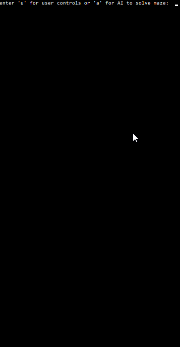
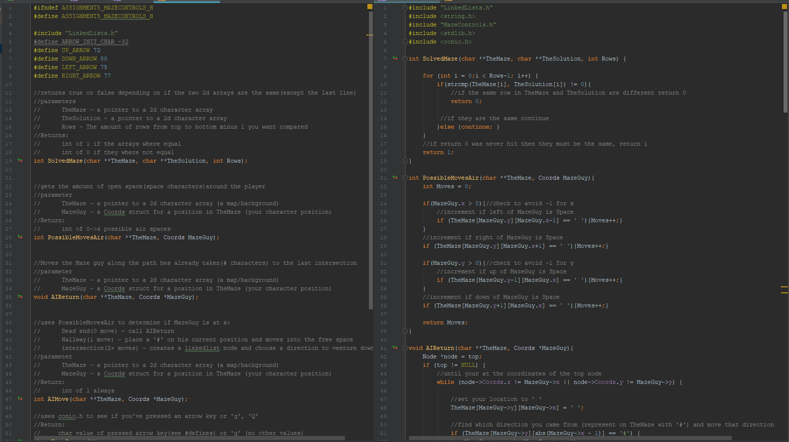

For my final assignment in my C programming class we were given a specific maze, and maze solution txt file and had to write a program that would use linked lists to solve the maze.
For this assignment I didn’t add too much, only the ability for a user to play though the maze instead of it being solved. I had plans to have the solver use Dijkstra/A*, instead I spent the time I had left making my comments and code look as nice as possible, and helping friends fix bugs in their code.
I am very proud of this program, I think that the commenting of the code, and the commenting on the headers is really clean and explains everything nicely. I am also very proud because my mark for this assignment was 100%, and I was the only person in the class to have a working program.
The program starts by prompting you if you want to solve the maze, or if you want to have it auto-solved. If you choose to solve the maze, the arrow keys are your controls. When the maze is being automatically solved, I don’t use any graphics buffing or only update what’s changed, so it appears to blink rapidly as it redraws for each step through the maze (The gif below i've edited to remove most of the flashing)
Comments: I understood the importance of comments from other projects, how much time they save, how helpful they are, and for the future. This project showed me how much more effective comments are when they are clean and give proper information. different sections need different levels of detail: Header files are for declaring variables and functions and are what the programmer will be looking at to use your library, so the comments can be written as if it’s a ‘black box’, telling what can go in and what can come out. The C files are where the code is and needs comments that explain the purpose, because the code already tells you what it’s doing
Example of some code from the program
Memory: This was the first ‘big’ project where I had to deal with memory. Putting pointers in and out of functions, reading from files, linked lists. This project does have one error (in FileIO.c), that luckily, I caught during my teacher’s code review. I noticed where I was supposed to be freeing the memory that a 2d array was using (this would be run when the program finished) wasn’t freeing properly. I had based it off of someone’s code (I included citations) but they had done it wrong. Before my teacher had got to that part, I told him the correct way of doing it (looping though and freeing each 1d array) and showed him the originals code. Thankfully he didn’t dock any points from me.